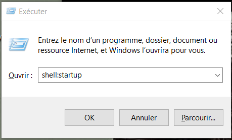
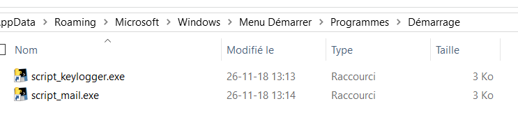
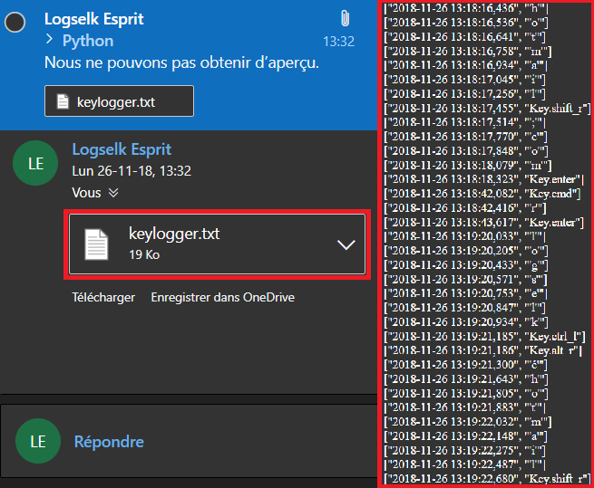

Malware
Ne sous-estimez pas les petites bêtes
De nos jours, de plus en plus de logiciels malveillants voient le jour. Cela est principalement du à la démocratisation des outils informatiques et à la professionnalisation des acteurs malveillants. Il est donc facile de se faire piéger actuellement. C'est pour cela que nous avons créé cette page, pour vous mettre en garde ainsi que pour vous montrer qu'il est facile de se faire piéger.
Définition
Les malwares ou "logiciels malveillants" ont pour but d’infiltrer un ordinateur sans que son utilisateur ne s’en rende compte. Les malwares se déclinent en différentes familles, voici les plus répandues :
Virus
Programme s’infiltrant dans d’autres programmes présents dans l’ordinateur. Il est capable d’infecter d’autres programmes sur l’ordinateur en les modifiant de sorte qu’ils puissent, à leur tour, héberger des virus.
Vers
C'est un virus réseau. En effet, il utilise le réseau informatique pour se propager sur plusieurs ordinateurs. Les vers sont autonomes, ils ne requièrent donc pas d'intervention humaine. Le ver utilise en général les ressources de l'ordinateur l'hébergeant pour assurer sa reproduction.
Chevaux de Troie ou Trojan
Les chevaux de Troie, contrairement aux vers, ne se répandent pas. Ils prétendent être légitimes mais sont en fait bien destinés à mener des actions contre leurs victimes. Ils s'appellent donc chevaux de Troie car ils se font passer pour ce qu'ils ne sont pas, comme le cheval de Troie dans la mythologie grecque.
Portes dérobées ou Backdoor
Ce type de malware a pour but de maintenir un port ouvert sur la machine cible. Cela rend l’ordinateur particulièrement vulnérable.
Spywares
Aussi appelés logiciels espions, ces logiciels ont pour but d’observer l’activité de l’utilisateur ou le contenu de son ordinateur. On peut distinguer deux grandes familles de spywares :
Adware
Logiciel à fins publicitaires, où l'utilisateur est exposé à des pubs indésirables et malveillantes. En général, il n'y a qu'une modification de la page d'accueil du navigateur internet. Son but est de vous amener sur un site web mais aussi de vous montrer de la publicité, ce pour quoi l'auteur est rémunéré. L'adware peut aussi vous voler des informations concernant votre vie privée.
Keylogger
Logiciel qui enregistre tout ce qui est tapé vers un fichier dans le but d'obtenir toutes vos informations sensibles. Les données seront ensuite envoyées à la source du logiciel.
Ransomwares
Ce logiciel chiffre vos données et affiche ensuite un message réclamant de l’argent pour obtenir la clé de déchiffrement et récupérer vos données. La rançon est en général de quelques centaines de dollars. Ce n’est pas parce que vous payez la rançon que vos données sont déchiffrées.
Rootkit
Ensemble de logiciels permettant d’obtenir des privilèges sur une machine (passer en « root » sous Unix/Linux ou passer en « Administrateur » sous Windows). Cet ensemble de logiciels permet d’effacer les traces laissées par l’opération dans les fichiers de connexion logs. Les Rootkits sont souvent utilisés par les chevaux de Troie dans le but de dissimuler leur activité.
Dialers
Le programme est installé à l’insu de son utilisateur. Il a pour but de contrôler le modem afin de déclencher des appels vers des numéros surtaxés. Les auteurs de ce type de malware gagnent de l’argent via les communications téléphoniques que la victime paie sans le savoir.
Hameçonnage ou Phishing
L’hameçonnage permet d’obtenir des données, principalement bancaires, sur l’utilisateur. Ce type d’attaque joue beaucoup sur la faille humaine. En effet, l’attaquant dupe la victime en se faisant souvent passer pour une source de confiance.
Historique
Le développement des malwares est principalement dû à la démocratisation des ordinateurs dans les années 70. Effectivement, de plus en plus de personnes avaient accès aux ordinateurs et le savoir concernant le fonctionnement des machines se répandait. Évidemment, certaines personnes ont utilisé cette connaissance de l’informatique à mauvais escient. De cette façon, les premiers virus sont apparus dans des réseaux dédiés. Un exemple est le virus “Creeper” déployé sur ARPANET, un réseau de l’armée américaine.
Au début des années 80, les virus se sont déployés et les premiers chevaux de Troie ont fait leur apparition. C’est principalement la plateforme Apple II qui a été touchée par cette épidémie. La première vague de virus compatible avec IBM a été détectée en 1986. En effet, le virus Brain se répand dans le monde entier après quelques mois. Les auteurs de ce virus disaient l’avoir créé dans le but de tester la santé du piratage informatique et à cet effet le virus ne faisait qu’infecter le secteur d’amorçage et modifier le nom du disque. C’est en 1987 qu’on observe la première épidémie sur les réseaux locaux à travers le vers Christmas Tree.
Concernant les années 90, on constate les premiers virus polymorphes à travers la famille Caméléon. Cela signifie que le virus était automatiquement modifié après chaque contamination. Ceci permettrait au virus de contourner les anti-virus de l’époque. Ce sera en 1992 qu’Eugène Kaspersky, un chercheur scientifique russe, développera une méthode permettant de neutraliser les virus polymorphes. Concernant Linux, le premier virus est apparu en 1997 mais les virus à l’encontre de ce système d’exploitation restent rares étant donné sa faible popularité en comparaison avec Microsoft Windows.
L’année 2000 est l’année qui a confirmé que le meilleur vecteur de propagation des virus est le courrier électronique. Effectivement, selon les statistiques du service d’assistance technique de Kaspersky Lab, environ 85% des infections enregistrées ont été exécutées par courrier électronique. Le développement des virus pour Linux a également marqué l’année 2000 étant donné que le nombre de virus visant le système d’exploitation s’est vu multiplié par 7 rien que cette année là. Un dernier point important qui marque cette année est le passage des virus de macro aux virus de script, ce dernier étant de plus en plus commun.
Quelques chiffres
L’évolution des malwares ces dernières années est considérable. En effet, selon Symantec 1.2 million de nouveaux malwares apparaissaient chaque jour en 2015 contre 3 millions en 2017. D’ailleurs la Belgique n’est pas en reste quant aux cyber-attaques et remporte la 13ème place des pays les plus attaqués en Europe et 33ème dans le monde en 2017, avec un total de 624 cyber-attaques par ransomware déjouées chaque jour. A l’échelle mondiale, les malwares représentent 48% des cyber-attaques (2017). Les revenus générés par la cybercriminalité atteindraient la somme exorbitante de 90 milliards de dollars par an, ce qui en fait un marché florissant et coûterait à l’économie mondiale la bagatelle de 600 milliards de dollars par an. De plus, malgré ce que l’on pourrait croire, les grandes entreprises ne sont pas les seules à être attaquées : en 2015, 43% des cibles étaient des PME en Belgique.
Sources
Les sources des malwares sont diverses : fichiers (photos, vidéos, pièces-jointes …), emails, internet, disques amovibles, failles des logiciels ou même encore l’utilisateur lui-même. En effet, les logiciels malveillants sont dissimulés dans ces multiples éléments et peuvent ensuite infecter un ordinateur ou réseau informatique. On peut trouver les malwares sur internet, sur des sites spécialisés, des forums particuliers, au sein de la communauté des hackers notamment.
Motivations et auteurs
Maintenant que nous avons défini comment se protéger des malwares, il serait intéressant de se demander qui sont les auteurs de ces logiciels malveillants. Pour identifier les auteurs, il faut se pencher sur les diverses motivations :
- Raisons professionnelles
L'argent lui aussi peut être obtenu en développant des malwares. Les professionnels développant des malwares sont eux entièrement dédiés à leur tâche et s’y adonne en secret bien qu’une réelle communauté bien développée existe, notamment dans l’informatique underground. Parmi eux certains étaient auparavant des script kiddies mais sont désormais capables de créer des logiciels malveillants parfois capables de gros dégâts.
- Raisons académiques
Certains groupes déclarent créer des virus qui permettent d’exploiter des failles de sécurité existantes dans le but de mettre en avant la vulnérabilité du système et ainsi pouvoir corriger cela par la suite. En revanche certains auteurs sont des scientifiques ou des professionnels. Les scientifiques qui créent des malwares n’ont aucunement pour but de nuire. En effet, le code source des malwares qu’ils développent n’est généralement pas mis à la disposition de tous mais gardé secret au sein de la communauté scientifique. Ils nomment d’ailleurs les logiciels malveillants créés des POC, c’est-à-dire Proof of Concept et leur objectif est purement pédagogique, ils veulent en savoir plus et tenter de déjouer les anti-virus existant.
- Raisons politiques
Certains virus ont pour but de n’afficher qu’un message pour déclarer socialement l’obsession de la société ou afficher un message politique. En réalité, ces virus ne nuisent pas vraiment au système informatique. Certains auteurs ont pour seul but le vandalisme : qu’il s’agisse de vengeance personnelle ou d’actes militants envers des entreprises bien spécifiques pour des associations, parfois des auteurs ont recours aux malwares.
- Raisons d’espionnage
Certains individus, via diverses méthodes, utilisent les virus dans le but de récolter des informations secrètes, notamment à des fins d’espionnage industriel ou afin de vendre ces informations, par exemple les numéros de cartes de crédit ou les adresses mails, à des sociétés. Les adresses mails collectées sont souvent utilisées pour envoyer des spams ou des courriels commerciaux non sollicités. En moyenne, 50 spams sur 1 000 000 reçoivent une réponse. Un spammer peut gagner 6000 dollars par semaine grâce au spam des adresses mail.
- Raisons financières
D’autres ont pour unique objectif d’obtenir de l’argent, c’est d’ailleurs la motivation la plus rependue. Ces auteurs utilisent des ransomwares ou rogues afin d’extorquer de l’argent à des entreprises, des chevaux de Troie sont utilisés pour récolter des informations et en tirer de l’argent (notamment pour voler de l’argent sur des comptes bancaires), ils peuvent même vendre/louer des réseaux de bots (consacrés à des attaques par déni de services ou afin d’envoyer des spams de manière colossale) ou encore créer des clefs de licence pour utiliser gratuitement des logiciels normalement payants.
- Raison de renommé
Certaines personnes écrivent des virus pour la gloire que cela leur procure. Très souvent, dans ce cas, les virus sont conçus pour se propager rapidement et de manière visible.
- Raisons de loisir, passe-temps
A l’arrivée des virus certaines personnes, après avoir obtenu leur diplôme, voulaient s’amuser et ont donc créé des virus et des chevaux de Troie. Leur but était d’appliquer leur connaissance et de renforcer leur confiance en eux. Heureusement, une majorité de ces virus n’ont pas été distribuées et ont disparu avec le temps.
Signes de présence d’un malware
La lenteur d’un navigateur internet est très souvent signe que l’appareil est infecté par un logiciel malveillant. Effectivement, certains malwares se connectent à internet sans que vous le sachiez. Cela a pour conséquence de réduire la bande passante disponible. La lenteur de l’ordinateur peut aussi être un signe de présence d’un malware. En effet, les virus peuvent exécuter beaucoup de tâches en arrière-plan, ce qui consomme énormément de ressources et ralentit donc l’ordinateur.
Concernant les fichiers et les dossiers, d’un côté, on peut voir qu’un logiciel malveillant a infecté l’ordinateur si ces derniers ont été supprimés de l’ordinateur sans intervention du propriétaire. D’un autre côté, on peut aussi voir cela si des fichiers, des programmes ou autres sont apparus.
D’un point de vue protection, la disparition de l’anti-virus et la désactivation du firewall peuvent être des signes d’infection. Effectivement, les virus vont essayer de neutraliser les systèmes de sécurité.
D’autres signes plutôt alarmants sont que l’ordinateur cesse de fonctionner, qu’il fonctionne tout seul, qu’il ait un comportement général inhabituel ou que l’activité du processeur augmente. La présence de fenêtres publicitaires et le spam peuvent aussi être des signes d’infection. Pour savoir si l’ordinateur est infecté par un logiciel malveillant on peut utiliser un logiciel de détection de malwares ou logiciel anti-malware, comme par exemple le logiciel ESET.
Création et utilisation d’un malware
Il est important de noter la facilité d’accès aux malwares. En effet, il n’est pas si compliqué d’en créer un de nos jours, notamment à partir de codes existant disponibles sur internet que l’on modifierait mais aussi grâce aux nombreux forums abordant des sujets informatiques tels que le codage où une personne souhaitant créer un malware pourrait obtenir de l’aide afin d’y parvenir si elle n’était pas familière avec la programmation. Encore plus simple pour une personne sans aucune base informatique et/ou qui ne souhaiterait pas réaliser le malware elle-même : de très nombreux malwares sont déjà disponibles, prêts à l’emploi, sur internet. Il existe même des générateurs tels que Gazorp, gratuit, qui crée des binaires du malware Azorult afin de permettre aux utilisateurs de voler des données, ou encore des générateurs de clefs en ligne permettant d’utiliser des logiciels normalement payants (pour lesquels on possède donc une clef d’activation) de façon gratuite et illégale. Face à cette facilité d’accès au monde des malwares, il est alors capital de savoir comment s’en protéger.
Solutions et prévention
Afin de se protéger des logiciels malveillants, plusieurs solutions existent, la plus connue étant les logiciels anti-virus. Les anti-virus sont des logiciels utilisés pour se protéger des malwares : en effet, ils servent non seulement à se débarrasser d’un malware déjà en place sur votre ordinateur ou votre réseau, mais aussi à prévenir leur apparition en les identifiant puis en les neutralisant. Mais comment procèdent ces logiciels anti-virus pour identifier ou supprimer les malwares ? Un anti-virus inspecte non seulement les données circulant sur un réseau informatique mais aussi de nombreux autres aspects tels que les médias amovibles (par exemple les clefs USB), les emails, les fichiers, la mémoire vive et les secteurs de démarrage de l’appareil.
En vérifiant ces différents éléments, l’anti-virus peut procéder de différentes manières. Il peut utiliser une méthode réputée très efficace, la méthode heuristique, qui analyse le code d’un programme inconnu afin de déterminer s’il s’agit d’un malware ou d’un logiciel bienveillant. Malgré que cette méthode soit la plus efficace elle peut parfois engendrer des erreurs, en effet un logiciel bienveillant peut être prit à tort pour un malware et inversement. Une autre méthode particulièrement efficace pour les serveurs mails qui supportent les expressions régulières, c’est-à-dire des chaines de caractères décrivant un ensemble d’autres chaines de caractères possibles (aussi nommées regexp) de type postfix (c’est le serveur mails par défaut sous UNIX, GNU/Linux, Mac OS X…) est l’analyse de forme. Cela consiste en un filtrage basé sur des règles regexp mises dans un fichier junk. Enfin la plupart des anti-virus utilisent la méthode suivante : ils comparent le code à vérifier (celui du supposé logiciel malveillant) avec la signature virale du virus (les virus connus). Cette optique se concentre sur les fichiers pour identifier les malwares.
Les différents fonctionnements des logiciels anti-virus ont été résumés ci-dessus mais il reste à aborder les approches que ces logiciels utilisent.
L’une d’elle est l’approche du dictionnaire. Un dictionnaire est une base de données contenant les signatures virales de virus connus, déjà identifiés. Ainsi, lorsque l’anti-virus tente de déterminer s’il s’agit ou non d’un logiciel malveillant, il peut directement comparer le code à vérifier avec les signatures virales du dictionnaire : s’il trouve une concordance c’est un malware identifié et il peut alors procéder à son élimination immédiate, endiguer la contamination en déplaçant le fichier infecté dans une zone isolée pour protéger le reste du système ou encore tenter une réparation (nettoyer le fichier infecté du virus). Une variante de cette approche est l’approche par liste blanche : par défaut tous les logiciels sont bloqués (empêchés de s’exécuter) et dans un second temps autorisés s’ils appartiennent à la liste des logiciels pré-approuvés par l’administrateur du réseau. Ainsi, on supprime les étapes cherchant à vérifier si ces logiciels sont des malwares pour s’en remettre à la fiabilité de l’administrateur réseau, cela permet donc un gain de temps mais pose aussi un problème quant à l’appréciation de l’administrateur.
Une deuxième approche des logiciels anti-virus consiste en une sorte d’étude comportementale des logiciels et s’en remet à la décision de l’utilisateur quant aux mesures à prendre vis-à-vis de ces comportements suspects. Un aspect positif de cette approche est qu’elle permet de prendre des mesures pour endiguer un malware même si celui-ci n’est pas encore répertorié dans un dictionnaire (en effet, on surveille son comportement et non uniquement sa signature virale) en revanche toute l’efficacité de cette méthode dépend des décisions finales de l’utilisateur à propos de la marche à suivre après que l’anti-virus lui ait signalé un comportement suspect.
D’autres approches existent, comme l’analyse heuristique précédemment abordée ou encore la méthode dite du bac à sable. Dans cette dernière approche, le logiciel à vérifier est exécuté dans un système d’exploitation émulé et ce dernier est ensuite analysé afin de détecter tout changement causé par le logiciel afin de juger de sa fiabilité.
Une autre manière de se protéger des malwares existe : c’est un système de détection d’intrusion. Cela détecte les tentatives d’intrusions au sein d’un réseau informatique ou même sur un hôte, que ces tentatives aient abouties ou non. Cela permet de garder un œil sur les activités d’un réseau. Mais la partie qui nous intéresse est la détection de malwares, pour cela c’est une branche plus spécifique des système de détection d’intrusions qui est concernée : les systèmes de détection d’intrusions machine ou Host Based IDS (HIDS). Les HIDS utilisent une norme afin de repérer les activités suspectes et peuvent alors envoyer une alerte. Afin de détecter ces activités suspectes, les HIDS utilisent les approches suivantes : étude comportementale, analyse des signatures virales ou encore utilisation des ACL (Access Control List).
Néanmoins il reste capital de garder à l’esprit que les solutions proposées ci-dessus ne seront d’aucune utilité sans quelques bonnes pratiques de base. Réaliser les mises à jour est une méthode simple mais peut permettre de se protéger des logiciels malveillants, il est donc important de penser à les faire régulièrement et ce pour chacun des logiciels utilisés mais aussi pour le système d’exploitation, entre autre. Garder un esprit critique permet aussi d’éviter de nombreux soucis : se méfier des pièces jointes, logiciels inconnus, vérifier l’authenticité des sites que l’on visite, ne pas cliquer sur n’importe quelle publicité ou encore ne pas connecter à son ordinateur un périphérique dont on ne serait pas certain de la fiabilité.
De plus, si malgré toutes ces bonnes pratiques citées précédemment un malware a infecté votre réseau informatique ou votre hôte, faites le supprimer par votre logiciel anti-virus et prenez ensuite les mesures nécessaires en fonction du type de malware et des dégâts engendrés.
Scandales
Certains scandales ont éclatés notamment au sujet des logiciels malveillants ces dernières années. Par exemple, le scandale des pourriciels chez Lenovos. Il semblerait que certains ordinateurs vendus par Lenovos contenaient des logiciels indésirables, ce scandale est connu sous le nom du « scandale Superfish ». Ces programmes installés d’emblée seraient capables non seulement de distiller des publicités précises sur Google, Chrome, Internet Explorer mais aussi et surtout ils dérangeraient le bon fonctionnement des échanges chiffrés et sécurisés via SSL tout cela en créant eux-mêmes leurs certificats, ce qui a créé une véritable débâcle dans le monde des professionnels. Mais cette société a remis ça plus tard et un second scandale a explosé : des logiciels d’optimisation auraient été installés par le système d’exploitation de façon automatique entrainant avec eux des failles liées à ces logiciels. Le problème c’est qu’il est impossible pour l’utilisateur de se débarrasser de ce logiciel, c’est entre autres ce qui a provoqué l’indignation : le système est vulnérable à des attaques mais il est impossible de supprimer le problème.
Démonstration d’un keylogger
Tout d’abord, nous avons rédigé nos deux script : un étant le keylogger à proprement parlé, l’autre servant à envoyer par email le fichier texte où est consigné tout ce que la personne ciblée aura tapé sur son clavier. Nous avons ensuite passé ces deux script en .exe (et non .py) afin qu’ils puissent s’exécuter même sans que l’interpréteur Python soit installé sur l’ordinateur, ou même éviter les problèmes de compatibilité python 2 et python 3.
script_keylogger.py script_mail.pyEnsuite, sur l’ordinateur cible, nous les avons mis dans le dossier de démarrage de l’ordinateur (afin que ces scripts s’exécutent automatiquement au démarrage de l’ordinateur). Pour cela, nous avons utilisé la combinaison de touches Windows+R, ce qui nous permet d’ouvrir shell:startup et ainsi atterrir dans le fameux dossier de démarrage où l’on a copié les raccourcis pointant sur les deux exécutables de notre keylogger. On redémarre ensuite l’ordinateur.
 Enfin, nous avons pu consulter nos emails (après quelques temps) et ouvrir le fichier envoyé par le malware : on y retrouve bien tout ce qui a été tapé par l’utilisateur de l’ordinateur sur lequel nous avons placé le keylogger.
Conclusion
Nous observons qu'il existe une grande variété de virus, chacun ayant un but bien précis. Ces virus sont créés pour des raisons financières,politiques ou autres. Il est possible de se protéger contre ces logiciels malveillants à travers un anti-virus par exemple. Si malgré ça votre ordinateur se fait tout de même infecter, il est possible de le voir assez rapidement à travers des signes qui ne trompent pas comme la lenteur par exemple.
Références
- https://www.undernews.fr/malwares-virus-antivirus/gazorp-un-nouveau-generateur-disponible-sur-le-dark-web.html
- https://fr.wikipedia.org/wiki/Logiciel_malveillant
- https://www.zdnet.fr/actualites/malware-4000143167q.htm
- https://www.axa.be/ab/FR/dossiers/cyber-protection/Pages/cybercriminalite-chiffres.aspx
- https://www.quora.com/What-are-some-common-sources-of-malware
- https://encyclopedia.kaspersky.fr/knowledge/who-creates-malware-and-why/
- https://www.ca-sudrhonealpes.fr/Vitrine/ObjCommun/Fic/SudRhoneAlpes/__Infographies__/Securite/Phishing/Malware_Comment-bien-se-proteger.html
- https://fr.wikipedia.org/wiki/Logiciel_antivirus
- https://www.journaldunet.com/solutions/cloud-computing/1150398-scandale-superfish-lenovo-livre-un-outil-pour-enlever-le-malware/
- https://www.makeuseof.com/tag/lenovo-pc-owners-beware-computer-preinstalled-malware/